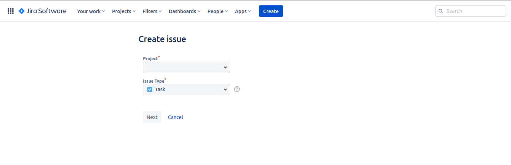
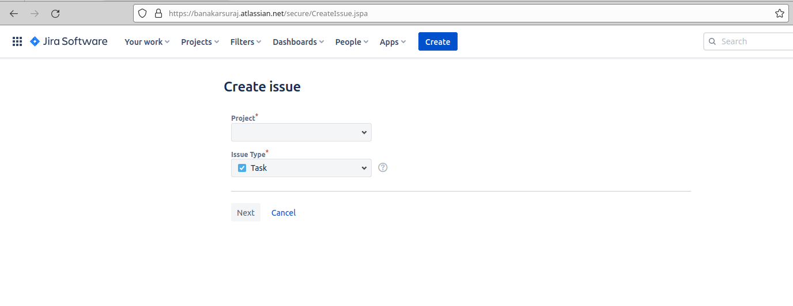

How to find Project ID and Issue Type ID in Jira without any special permissions
Contents
Problem
How do you find Project ID and Issue Type ID in Jira when you don’t have any special permissions?
Solution
Note: This works for Jira Cloud. I haven’t tested it with Jira Server.
1. Go to https://<your-jira-name>.atlassian.net/secure/CreateIssue.jspa (example: https://banakarsuraj.atlassian.net/secure/CreateIssue.jspa)
You should see a screen like this: 
2. Right click and select Inspect
3. Find the Ids
3.1. For Project Id
Search for #project-options HTML Id in the Inspect Element tab
Double click on Recent projects and you should see it expand like this:
Copy the highlighted part between the white spaces.
It will look something like this:
|
|
Search for your project name in the raw json above. e.g., I want to find the Project ID for foo-team project.
Look at the value part. That’s your project ID. In the above image it is, 10000
3.2. For Issue Type Id
Search for #issuetype-options HTML Id in the Inspect Element tab
Double click on the part after data-suggestions and you should see it expand like this:
Copy the highlighted part between the white spaces.
It will look something like this:
|
|
Search for your issue type in the raw json above. e.g., I want to find the Issue Type ID for Story.
Look at the value part. That’s your Issue Type ID. In the above image it is 10001
Conclusion
You can use the Project ID and the Issue Type IDs to create shareable links with the Project and Issue Type already selected.
e.g., If you open https://banakarsuraj.atlassian.net/secure/CreateIssue.jspa you will see a screen like this:  You have to select the Project and Issue Type yourself.
With the knowledge of Project ID and Issue Type ID, you can add query parameters to the link above e.g., https://banakarsuraj.atlassian.net/secure/CreateIssue.jspa?issuetype=10001&pid=10000
Note: pid here is the Project ID
If you open the above link in the browser, you will find the project and the issue type already selected like this: